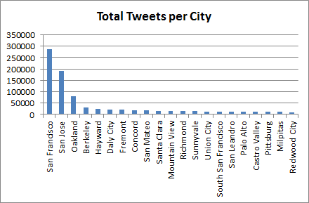
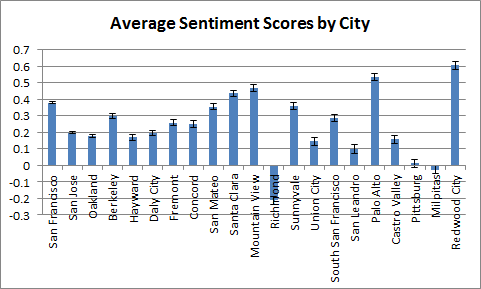
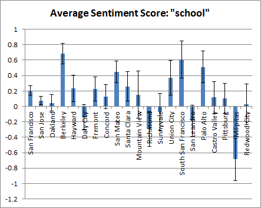
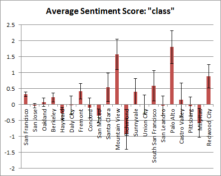
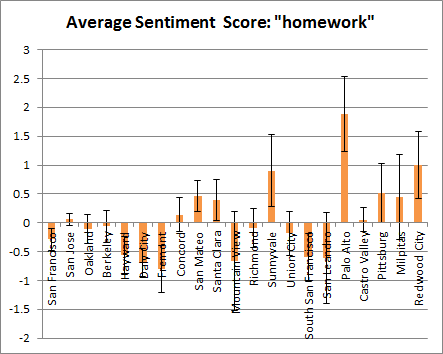

Today’s post is going to be a quick one (and not a how-to, though I’ll return to that with the next post). Why? It might have something to do with my impending thesis due date – less than a month away, for the written draft – and also something to do with a many-step molecular biology protocol called in situ hybridization, which means a lot of long days in the lab. But I did want to post something describing the pipeline I’ve come up with so far for collecting, extracting, and analyzing tweets, as well as some preliminary results (nothing conclusive or earth-shattering, but a demonstration that you can begin to see interesting trends using Twitter analysis).
As a reminder, my goal with this project is to use Tweets containing education-related keywords to monitor attitudes towards education in different geographical locations (for this initial work, different locations around the San Francisco Bay Area). A lot of what I’ve done has been based off of code/assignments from Bill Howe’s Coursera course on Data Science (which appears to no longer be on Coursera, but still has an excellent GitHub repository here. Currently, my workflow consists of three steps, each corresponding to different pieces of Python code (which can be found in my GitHub repository, for those who are interested):
- Twitterstream.py: Collects messages from Twitter, within a specified geographical bounding box (in my case, the S.F. Bay Area), and pipes them into a text file in JSON format.
- ExtractTweetData.py: Reads the raw data from the stream file and converts it into a tab-delimited file. This file does not contain all possible metadata, just the ones of interest for my particular project (e.g., geographical location data). A simple sentiment score based on the AFINN-111 matrix is also calculated for each Tweet.
- ParsedTweetReader.py: Takes the tab-delimited tweet file from the previous step, along with a set of query terms, and calculates the frequency and average sentiment score for each term in each geographical location.
This pipeline is still very much a work in progress, and I need to do additional checks to make sure I don’t have bugs (in particular, the way I calculate standard deviations and standard errors involves some weird lists-of-lists, so please take my preliminary data with a grain of salt). If I find mistakes, I’ll be sure to edit this post to include corrections. That said, I do have the pipeline up and running, and would like to share some of the preliminary results – to give a sense of what works well using this pipeline, as well as what could be improved.
First, here is a simple geographical frequency distribution of Tweets within my sample (comprising slightly under a month of collected data, with discontinuous collection; only locales with > 10,000 Tweets are shown):
There seem to be some baseline differences in sentiment scores associated with the different cities, although all the average sentiment scores are quite small in magnitude (error bars show standard error of the mean):
When I pull out only messages containing certain keywords (in this case, related to education) and calculate their average sentiment scores in different locales, I again observe some differences in scores but small overall magnitudes and large errors (bars indicate standard error of the mean). For example, for the keywords “school,” “class,” and “college,” which are three of the most common education-related terms in my dataset, the following patterns are observed:
 As a check that the sentiment scores are detecting something meaningful, we can also check the scores for “homework,” which would generally be expected to have a more negative sentiment associated with it (especially around the start of school):
“Homework” does tend to have a negative sentiment score, though for some of the cities towards the right-hand side of the graph (cities with smaller overall samples), the results are probably not very accurate because the number of term-containing tweets is small (as few as 11 for Redwood City).
This analysis is exciting, as it shows that I’m in fact able to detect differences between regions in relation to education-related keywords. However, it also highlights some imperfections in the data collection, data analysis, and the sampling design of the investigation. Some of the things I’ve noticed, and am planning to work on in the future, include:
- Data Collection: My data collection is discontinuous (consists of semi-random chunks) because I collect data on an old computer that gets filled up, accidentally shut off by the cleaning lady, disconnected by the Twitter streaming endpoint, etc. Having a more robust data collection method would allow me to do analyses over time, which might reveal interesting trends at the weekly and monthly scales.
- Sentiment Score Calculation: The method I’m using to calculate sentiment scores is a very rudimentary one. It only works at all for messages that contain one of a fixed set of words (those in the AFINN-111 matrix), with other message receiving a neutral 0. The words are only in standard English, and emoticons and punctuation are not taken into consideration. Calculating a better sentiment score, perhaps using machine learning approaches and taking full advantage of emoticons, is an area I’d really like to follow up. (E.g., I’d like to try training random forests on positive/negative messages, then using the trained classifier on new messages and assigning the signed % certainty of classification as the message sentiment score.
- Sampling Design: One problem with my current sample is that, for any given geographical location, it’s just not big (the number of messages with a given query term is pretty small). I had initially wanted to sample the Bay Area because I had some idea of how locales might vary due to socioeconomic factors, but if I were to do this experiment again, I think I might try a larger scale (e.g., splitting the U.S. up by states, or choosing only major metropolitan areas) so as to have significantly bigger datasets.
Okay, that’s already more time than I was supposed to spend on this today, so I’d better get back to the in situs. But thank you for reading, and I hope you’ll check back soon for the next tutorial, which will be on parsing JSON format files.